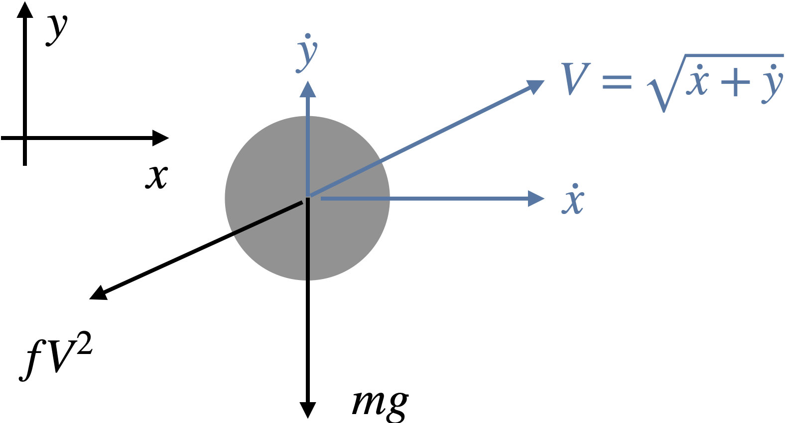

Solve the following initial value problem over the interval \(t\) = 0 to 2 where \(y(0) = 1\).
\[\frac{dy}{dt} = y t^2 - 1.1 y\]Display all of the following results on the same graph (five curves).
(a) Write your own Euler’s method and use the following step sizes h = 0.5, 0.1, 0.01.
(b) Use the default solver (RK45) in scipy.integrate.solve_ivp. Start with the defaults. Then plot a second set of results using either the t_eval option (store solution at more times) or the atol, rtol options (tighten tolerances) so that the plotted solution is smooth.
The van der Pol equation was originally developed to model electric circuits and has also been used to model biological neurons.
\[{d^2x \over dt^2} - \mu(1-x^2){dx \over dt} + x = 0\]Using the initial conditions \(x(0) = 1, x^\prime(0) = 2\), and the parameter \(\mu = 2\), solve this equation from t = 0 to 10 using solve_ivp.
“Game of 7” is a game where you try and bounce a ping pong ball across the table with a precise number of bounces. The first time, the ball should bounce once, the second time it should bounce twice, etc. The goal is to get the ball to move from 1 bounce to as many bounces as possible without messing up. For an example, see this video. We will build a numerical simulation, and use it to see which initial conditions can lead to the desired number of bounces of a ball across the table.
Our first step is deriving the equations of motion. More specifically, we can divide the behavior into two different regimes: flying through the air and contacting the table.
When flying through the air, the ball is subject to gravity and drag (which is proportional to the square of velocity) with proportionality constant \(f\). Drawing a free-body diagram and writing Newton’s second law in both \(x\) and \(y\) directions:

\[\begin{align} - f \dot{x} \sqrt{\dot{x}^2 + \dot{y}^2} &= m \ddot{x} \\ - f \dot{y} \sqrt{\dot{x}^2 + \dot{y}^2} - m g &= m \ddot{y} \end{align}\]When the ball is in contact with the ground, we will assume that the ball acts like a mass with stiffness (modeled as a spring with stiffness \(k\)) and damping (modeled as a damper with damping \(b\)). Drawing a free-body diagram and writing Newton’s second law in both \(x\) and \(y\) directions yields the same equations but with the added spring/damping terms in the \(y\) direction:
\[\begin{align} - f \dot{x} \sqrt{\dot{x}^2 + \dot{y}^2} &= m \ddot{x} \\ - f \dot{y} \sqrt{\dot{x}^2 + \dot{y}^2} - m g - b \dot{y} - k y &= m \ddot{y} \end{align}\]Converting these coupled second-order ODEs into first-order ODEs will result in four coupled equations (where one of the equations has additional terms when in contact with the ground).
In your ODE function you will need an if/else statement based on whether the ball is in contact with the ground or not. For simplicity, we’ll neglect the radius of the ball and say we’re in contact with the ground when \(y \le 0\).
Use the following parameters: \(m\) = 0.0027 kg, \(f\) = 0.0007 kg/m, \(b\) = 0.01 kg/s, \(k\) = 200 N/m.
For a table length of 1 m, find appropriate initial conditions to get to 3 bounces before leaving the table. Limit the \(x\) axis of your plot to range from 0 to 1 so that’s it is easy to see the bounces on the table. The pyplot function xlim will be helpful.